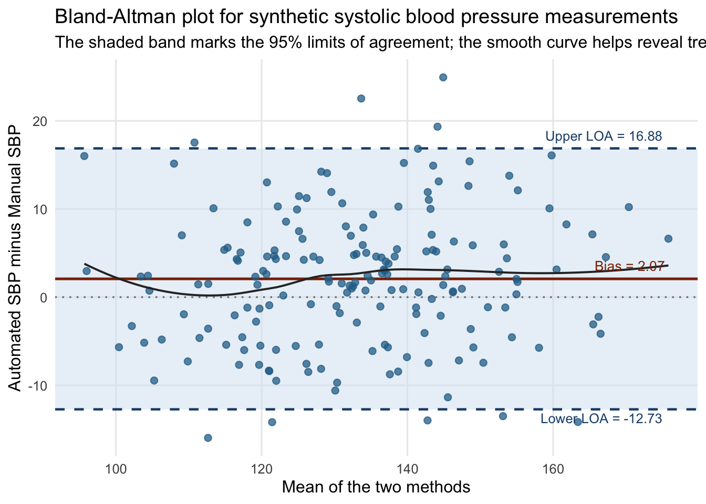
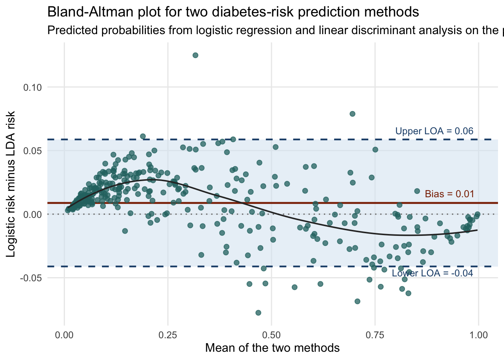

library(dplyr)
library(ggplot2)
library(knitr)
library(MASS)
set.seed(2026)
n_patients <- 180
true_sbp <- rnorm(n_patients, mean = 132, sd = 16)
manual_sbp <- true_sbp + rnorm(n_patients, mean = 0, sd = 4.5)
automated_sbp <- true_sbp + 2.0 + 0.03 * (true_sbp - mean(true_sbp)) +
rnorm(n_patients, mean = 0, sd = 5.5)66 Bland-Altman Plot
Visualizing agreement between two quantitative methods instead of relying on correlation alone
This chapter creates a Bland-Altman plot for comparing two quantitative methods. The figure is useful because agreement is not the same thing as association. Two methods can be highly correlated and still disagree in ways that matter clinically or operationally. Bland and Altman made this point forcefully in their classic papers on method-comparison analysis Bland and Altman (1986); Bland and Altman (1999).
The figure is especially valuable in health research because new devices, assays, and prediction tools are often evaluated against existing ones. A scatterplot can show whether two methods move together, but it cannot show the average disagreement clearly or reveal whether the disagreement changes across the measurement range. A Bland-Altman plot is designed to answer exactly those questions.
66.1 What the visualization is showing
We will build a Bland-Altman plot for two quantitative methods. The figure will show:
- the average of the two methods on the horizontal axis,
- the difference between the two methods on the vertical axis,
- a horizontal line for the mean difference, often called the bias,
- upper and lower limits of agreement.
The standard limits of agreement are
\[ \bar{d} \pm 1.96 s_d, \]
where \(\bar{d}\) is the mean difference and \(s_d\) is the standard deviation of the differences. If the differences are approximately Normal, about 95% of future paired differences should lie inside those limits.
The plot should be read with three questions in mind:
- Is there systematic bias, meaning is the average difference far from 0?
- Are the limits of agreement narrow enough to be acceptable for the application?
- Does disagreement change with the size of the measurement, suggesting proportional bias or heteroskedasticity?
66.2 Step 1: Create a synthetic paired-measurement example
We will start with a synthetic example comparing a manual and an automated systolic blood pressure measurement taken on the same patients. The automated device is designed to be close to the manual reading but not identical. To make the plot informative, we build in a small positive bias and slightly wider disagreement at higher blood pressure values.
Next we create a small helper that computes the quantities needed for the figure and for the summary table.
prepare_bland_altman <- function(method_a, method_b, label_a, label_b) {
plot_df <- data.frame(
method_a = method_a,
method_b = method_b
) |>
dplyr::mutate(
mean_measurement = (method_a + method_b) / 2,
difference = method_a - method_b
)
bias <- mean(plot_df$difference)
sd_difference <- sd(plot_df$difference)
upper_limit <- bias + 1.96 * sd_difference
lower_limit <- bias - 1.96 * sd_difference
summary_df <- data.frame(
comparison = paste(label_a, "minus", label_b),
sample_size = nrow(plot_df),
mean_method_a = mean(method_a),
mean_method_b = mean(method_b),
bias = bias,
sd_difference = sd_difference,
lower_limit = lower_limit,
upper_limit = upper_limit,
proportion_outside = mean(
plot_df$difference < lower_limit | plot_df$difference > upper_limit
)
)
list(
plot_df = plot_df,
summary_df = summary_df,
bias = bias,
lower_limit = lower_limit,
upper_limit = upper_limit,
label_a = label_a,
label_b = label_b
)
}
build_bland_altman_plot <- function(ba_obj, title, subtitle, point_color) {
ggplot(ba_obj$plot_df, aes(x = mean_measurement, y = difference)) +
annotate(
"rect",
xmin = -Inf,
xmax = Inf,
ymin = ba_obj$lower_limit,
ymax = ba_obj$upper_limit,
fill = "#d9e6f2",
alpha = 0.55
) +
geom_hline(
yintercept = 0,
color = "#7f7f7f",
linetype = "dotted",
linewidth = 0.6
) +
geom_hline(
yintercept = ba_obj$bias,
color = "#8c2d04",
linewidth = 0.9
) +
geom_hline(
yintercept = c(ba_obj$lower_limit, ba_obj$upper_limit),
color = "#1f4e79",
linetype = "dashed",
linewidth = 0.8
) +
geom_point(
color = point_color,
alpha = 0.75,
size = 2
) +
geom_smooth(
method = "loess",
se = FALSE,
color = "#2f2f2f",
linewidth = 0.7
) +
annotate(
"text",
x = max(ba_obj$plot_df$mean_measurement),
y = ba_obj$bias,
label = sprintf("Bias = %.2f", ba_obj$bias),
hjust = 1.05,
vjust = -0.8,
size = 3.5,
color = "#8c2d04"
) +
annotate(
"text",
x = max(ba_obj$plot_df$mean_measurement),
y = ba_obj$upper_limit,
label = sprintf("Upper LOA = %.2f", ba_obj$upper_limit),
hjust = 1.05,
vjust = -0.8,
size = 3.4,
color = "#1f4e79"
) +
annotate(
"text",
x = max(ba_obj$plot_df$mean_measurement),
y = ba_obj$lower_limit,
label = sprintf("Lower LOA = %.2f", ba_obj$lower_limit),
hjust = 1.05,
vjust = 1.4,
size = 3.4,
color = "#1f4e79"
) +
labs(
title = title,
subtitle = subtitle,
x = "Mean of the two methods",
y = paste(ba_obj$label_a, "minus", ba_obj$label_b)
) +
theme_minimal(base_size = 12) +
theme(
panel.grid.minor = element_blank()
)
}synthetic_ba <- prepare_bland_altman(
method_a = automated_sbp,
method_b = manual_sbp,
label_a = "Automated SBP",
label_b = "Manual SBP"
)
synthetic_summary <- synthetic_ba$summary_df |>
dplyr::mutate(
dplyr::across(where(is.numeric), ~ round(.x, 3))
)
knitr::kable(
synthetic_summary,
caption = "Summary statistics for the synthetic Bland-Altman example"
)| comparison | sample_size | mean_method_a | mean_method_b | bias | sd_difference | lower_limit | upper_limit | proportion_outside |
|---|---|---|---|---|---|---|---|---|
| Automated SBP minus Manual SBP | 180 | 134.188 | 132.113 | 2.075 | 7.552 | -12.727 | 16.877 | 0.05 |
The summary already says something important. The average automated reading is slightly higher than the manual one, so the bias is positive. The limits of agreement show how wide the method-to-method differences can be even when the average bias is modest.
66.3 Step 2: Draw the synthetic Bland-Altman plot
synthetic_plot <- build_bland_altman_plot(
synthetic_ba,
title = "Bland-Altman plot for synthetic systolic blood pressure measurements",
subtitle = "The shaded band marks the 95% limits of agreement; the smooth curve helps reveal trend",
point_color = "#2a6f97"
)
synthetic_plot
This figure should be interpreted point by point. Each point is one patient. If the point lies above 0, the automated device reads higher than the manual method for that patient. If it lies below 0, the automated device reads lower. The dashed lines show the empirical limits of agreement, and the solid line shows the average bias.
Notice that the smooth curve is not flat. That signals a mild tendency for disagreement to become more positive at higher blood pressure values. The plot therefore shows not just average disagreement, but how disagreement behaves across the range of measurements.
66.4 Step 3: Create a real-world Bland-Altman plot from a public prediction dataset
For a real-world example, we will use the public Pima.tr and Pima.te diabetes datasets from MASS, linked to the diabetes-classification study by Smith and colleagues Smith et al. (1988). We will fit two probability models in the training sample, logistic regression and linear discriminant analysis, then compare their predicted diabetes risks in the test sample using a Bland-Altman plot.
This is a transparent partial application. The original Smith paper was not published with a Bland-Altman figure, and the two fitted models below are a teaching adaptation. But the public data provide a clear real-world setting for comparing two quantitative methods that estimate the same underlying quantity: patient-level diabetes risk.
data("Pima.tr", package = "MASS")
data("Pima.te", package = "MASS")
pima_logit <- glm(
type ~ npreg + glu + bp + skin + bmi + ped + age,
data = Pima.tr,
family = binomial()
)
pima_lda <- MASS::lda(
type ~ npreg + glu + bp + skin + bmi + ped + age,
data = Pima.tr
)
logit_prob <- predict(pima_logit, newdata = Pima.te, type = "response")
lda_prob <- predict(pima_lda, newdata = Pima.te)$posterior[, "Yes"]
real_ba <- prepare_bland_altman(
method_a = logit_prob,
method_b = lda_prob,
label_a = "Logistic risk",
label_b = "LDA risk"
)
real_summary <- real_ba$summary_df |>
dplyr::mutate(
dplyr::across(where(is.numeric), ~ round(.x, 3))
)
knitr::kable(
real_summary,
caption = "Agreement summary for logistic and LDA diabetes-risk predictions in the public Pima test sample"
)| comparison | sample_size | mean_method_a | mean_method_b | bias | sd_difference | lower_limit | upper_limit | proportion_outside |
|---|---|---|---|---|---|---|---|---|
| Logistic risk minus LDA risk | 332 | 0.337 | 0.328 | 0.009 | 0.025 | -0.041 | 0.059 | 0.06 |
real_plot <- build_bland_altman_plot(
real_ba,
title = "Bland-Altman plot for two diabetes-risk prediction methods",
subtitle = "Predicted probabilities from logistic regression and linear discriminant analysis on the public Pima test sample",
point_color = "#287271"
)
real_plot
This real-world plot answers a different question from discrimination plots such as ROC curves. It does not ask which model ranks patients better. It asks whether the two methods give similar probability estimates for the same patients. If the bias is near 0 but the limits of agreement are still wide, then the models agree on average but can disagree materially for individual patients.
In this example, the methods tend to agree reasonably well in the middle of the risk range but can diverge more at higher average predicted risk. That pattern matters if the probabilities will be used for decision thresholds, risk communication, or clinical triage.
66.5 How to read the figure carefully
A Bland-Altman plot is most useful when the reader already has some idea of what difference is substantively tolerable. Statistical limits alone do not say whether agreement is good enough. A difference of 5 units might be trivial for one application and unacceptable for another.
The plot should also be read for structure, not just for the width of the band. Three patterns are especially important:
- a nonzero mean difference, which signals systematic bias,
- a trend in the smooth curve, which suggests proportional bias,
- a widening spread, which suggests heteroskedastic disagreement.
When those patterns appear, the analyst may need a transformation, a different comparison scale, or a model that allows disagreement to vary with the level of the measurement.
66.6 Further reading
Bland and Altman’s original papers remain the essential starting point because they explain both the logic of the plot and the difference between agreement and correlation Bland and Altman (1986); Bland and Altman (1999). The Pima diabetes dataset comes from the work of Smith and colleagues and provides a convenient public setting for illustrating agreement between quantitative prediction methods Smith et al. (1988).
Bland, J. Martin, and Douglas G. Altman. 1986. “Statistical Methods for Assessing Agreement Between Two Methods of Clinical Measurement.” The Lancet 327 (8476): 307–10. https://doi.org/10.1016/S0140-6736(86)90837-8.
———. 1999. “Measuring Agreement in Method Comparison Studies.” Statistical Methods in Medical Research 8 (2): 135–60. https://doi.org/10.1177/096228029900800204.
Smith, J. W., J. E. Everhart, W. C. Dickson, W. C. Knowler, and R. S. Johannes. 1988. “Using the ADAP Learning Algorithm to Forecast the Onset of Diabetes Mellitus.” In Proceedings of the Symposium on Computer Applications in Medical Care, 261–65.